About
Superimmersive Art is a 3D and immersive technology company based in George, Western Cape. The company earns export revenue by providing specialist 3D and software development services to an international client, and uses that income to fund the development of its own software products.
The long-term goal is to be a market leader in interactive design — realtime 3D, XR, and tools people can walk through and change, not only look at. Getting there means moving from a service business to a product business: recurring revenue through subscriptions, software licensing, and product sales, so the company can build South African IP, create skilled jobs, offer graduate internships, and reinvest in further development.
Who we are
Superimmersive Art was founded and is led by Devon Gray Kirchner, a technical artist and software developer with over 11 years of professional experience across Unity, Blender, Autodesk 3ds Max, Autodesk Maya, virtual and augmented reality, video production, and realtime interactive web technologies.
The company’s current income comes from 3D and technical art services delivered to Fuzzy Logic Studio Ltd (UK) for their VR and immersive training pipelines. Alongside that contract, the founder develops the company’s own products in-house. Full product detail is on each product page.
Client work
Delivered through studio engagements
- Anglo American
- Digital training tool for mining operations and safety
- Aston Martin
- Digital twin of the Valhalla hypercar; visual training on high-voltage battery assembly
- Nissan
- Digital twins of the Magnite and Navara; virtual showroom; marketing videos
- Absa
- Digital twin of ATM machines, used as a training tool
- University of Johannesburg
- Digital mascot and campus guidance tool
- Sasol
- Character mascots and digital training tools
- Nestlé
- AR activation for a newly launched milk product
- SANRAL
- Digital flythroughs of intersections; digital recreation of the Huguenot Tunnel
- The Blair Project
- Training on converting a petrol go-kart to electric using their assembly kit
- Investec
- Digital avatar
- Netbank
- Roblox game teaching children how to run a business
- Thule
- Digital twin of bicycle racks and vehicle accessories
- Network Rail
- AR gallery of operational trains and museum pieces; railway safety training tool
- Transnet
- Digital twin of a hub motor
- HP
- AR activation for a printed cereal box
- Carberry
- Martian characters animated on chocolate wrappers
- Hasbro
- AR game
- HRUC
- VR training simulations — fire safety, wiring a plug, road safety, changing a tyre
- Capel Manor College
- Training tools for farming, bushcraft, and hydrogen production modules
- Roche Diagnostic Solutions
- Digital twins of diagnostic machines
- Game South Africa
- AR appliances
- Weylandts
- AR furniture
- Other
- Smaller brands and agency work
Founder history
- 2010 – 2014 Formal training in animation and digital art
- 2015 – 2020 Employed as an immersive / 3D artist at Fuzzy Logic Studio (South Africa)
- 2021 – 2026 Contract work for The Pulse Rooms, Seamonster, and Fuzzy Logic Studio (UK)
- Feb 2025 Registered Superimmersive Art (Pty) Ltd to formalise the contracting work and building the company’s product IP
Products in development
Proprietary products with subscription and licensing revenue potential.
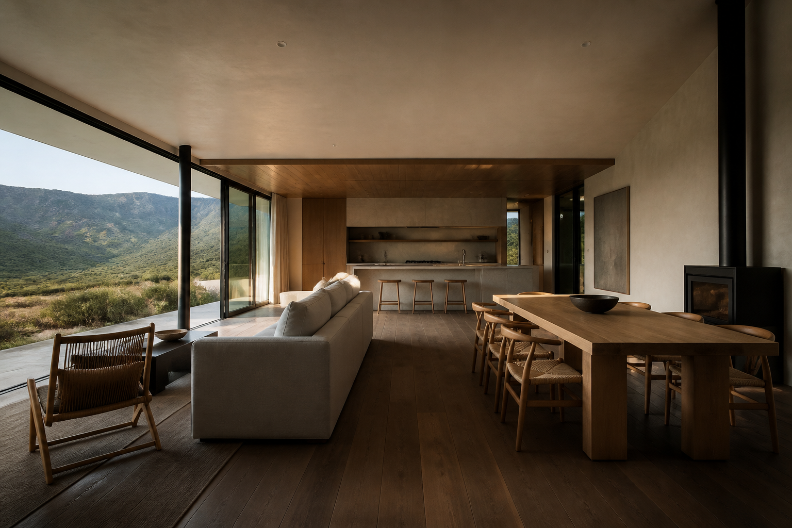
01 Super Immersive Homes Working product core; pre-revenue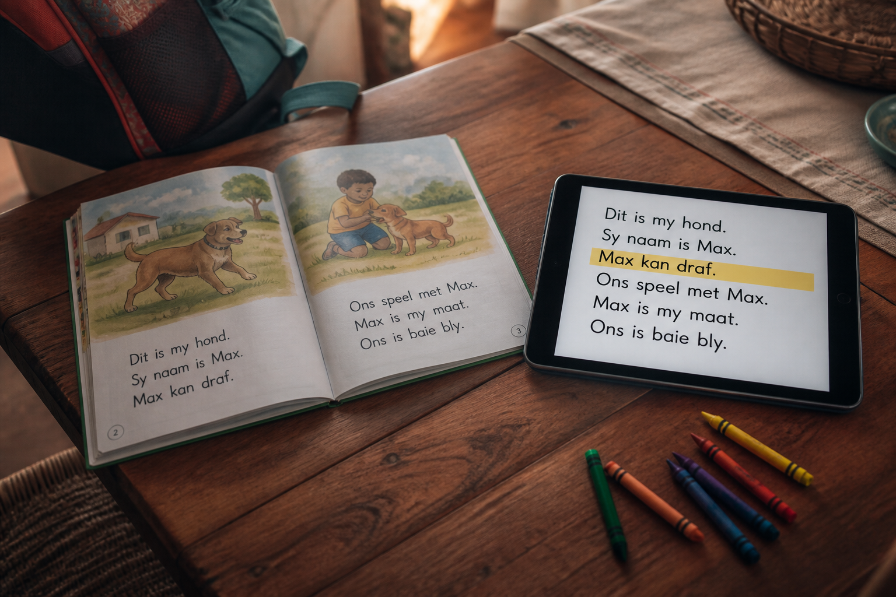
02 LekkeLeer MVP in early access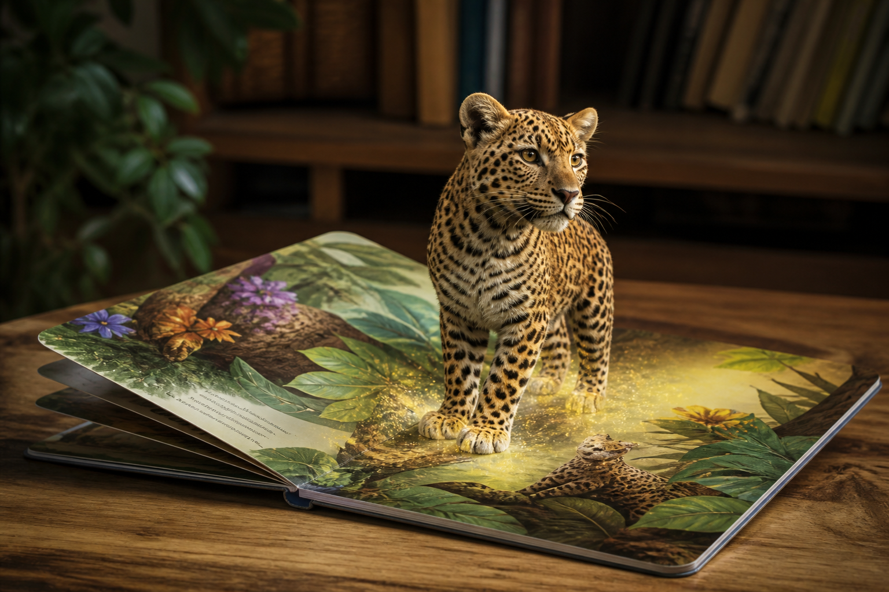
03 AR books and WebAR line Multiple working demos published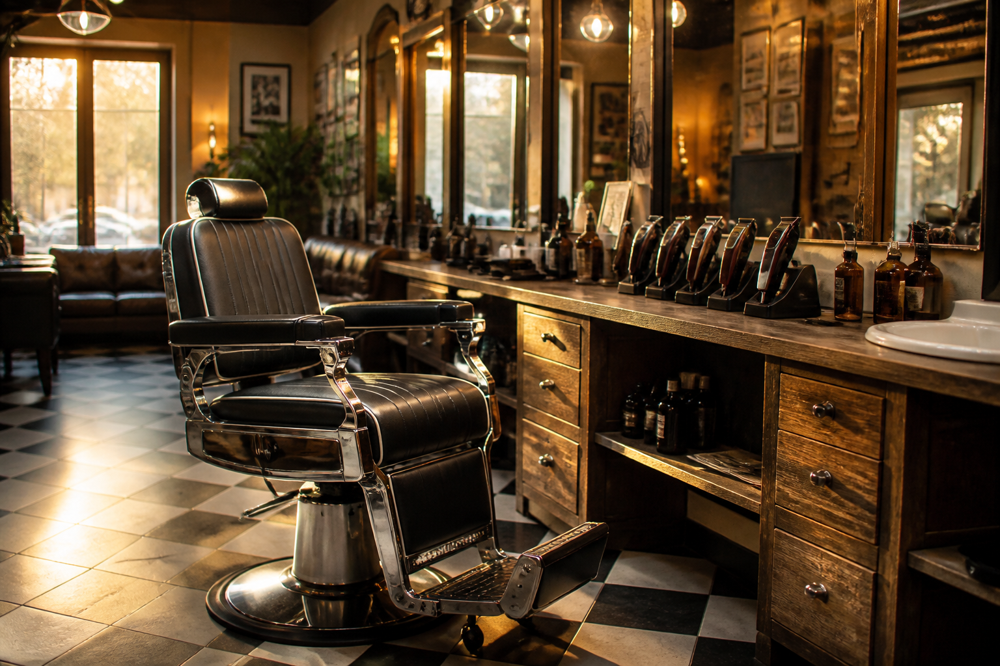
04 Book a Barber Working prototype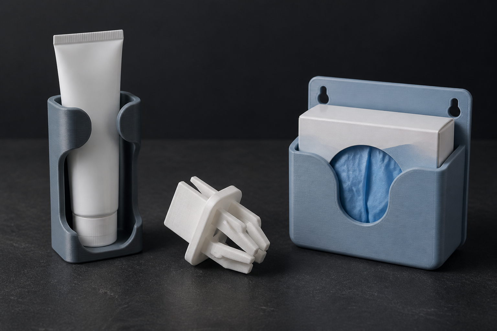
05 3D-printed products Three products selling 06
Simulation-based training tools
Medical, industrial, and safety simulation in VR
06
Simulation-based training tools
Medical, industrial, and safety simulation in VR
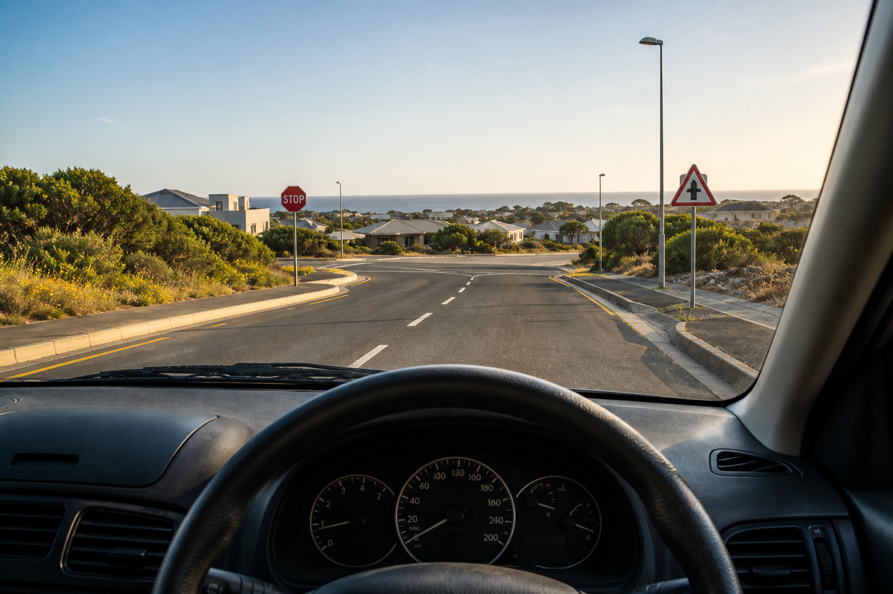
07 VR driving-school simulator Documentation complete; prototype phaseServices
Commissionable work providing immediate, project-based client revenue.
 S1
Technical art and 3D content production
Realtime assets, look-dev, modeling, animation, and visualisation.
S1
Technical art and 3D content production
Realtime assets, look-dev, modeling, animation, and visualisation.
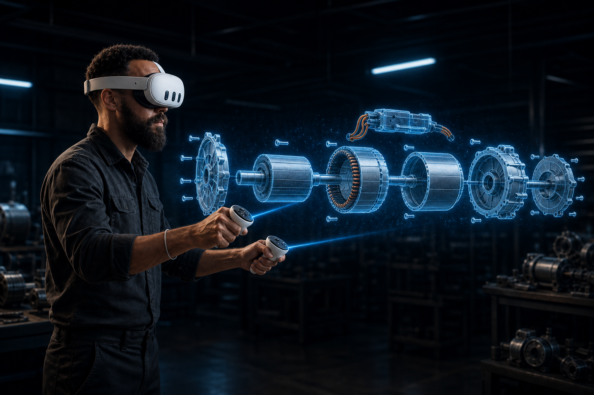
S2 XR app development Quest, WebXR, and immersive training apps.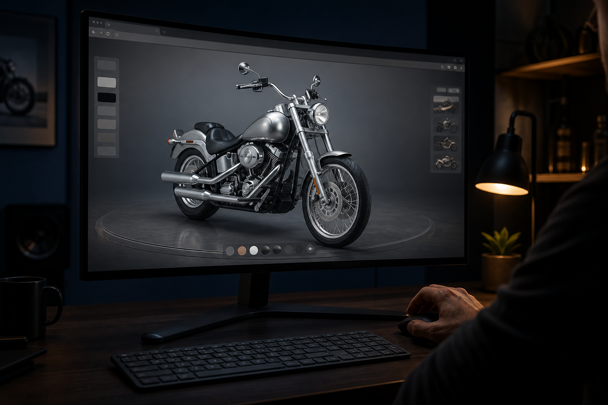
S3 Interactive web development Realtime 3D, WebAR, and product-grade web apps.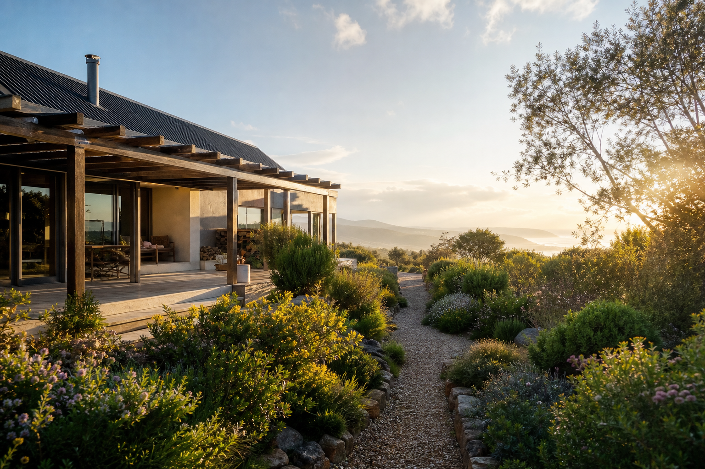
S4 3DGS capture and processing Pipeline ready; requires 360 drone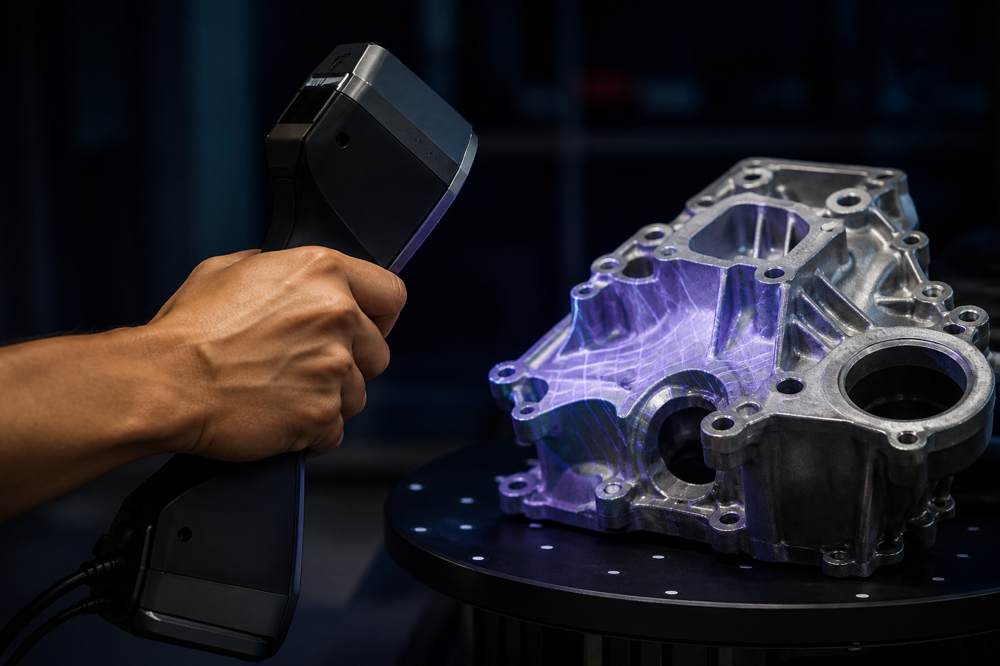
S5 3D scanning Object and environment capture for realtime use.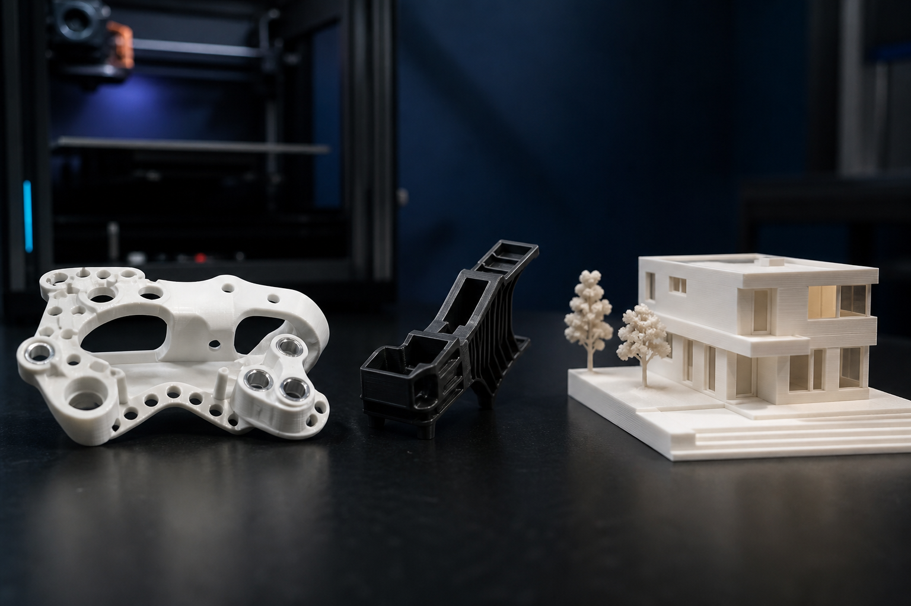
S6 Custom 3D printing Design, print, and small-batch physical products.How the company makes money
Current revenue: 3D art services to Fuzzy Logic Studio Ltd (UK). Three 3D-printed products are also on the market — see 3D-printed products.
Future revenue: product subscriptions and licensing, plus 3DGS scanning services for Garden Route and export clients. See services and individual product pages.
The company’s cash flow is positive but depends on one client. The international service contract covers day-to-day costs.
What sets the company apart
- The founder builds the products Over a decade of hands-on experience means no external development team is needed. Development costs stay low, iteration is fast, and the IP stays in the company.
- Real revenue already A paying international client means product development is supported by actual cash flow.
- A delivery record across major brands Work delivered for Anglo American, Aston Martin, Nissan, Absa, Investec, Sasol, Nestlé, Network Rail, Transnet, HP, Hasbro, and Roche.
- Working products, not concepts Super Immersive Homes has a large working codebase; LekkeLeer is live; WebAR demos are published; printed products are selling.
- Export-proven Revenue already comes from the UK; products are designed for both South African and international markets.
- Early on 3DGS Capture, processing, and presentation skills in place; a product it feeds directly; a client already paying for adjacent work.
Job creation and local impact
- Direct job creation: Create opportunities for local developers and technical specialists as products move into development and commercialisation.
- Local skills development: Recruit graduates from the Mossel Bay 4IR campus and provide pathways into real commercial software, 3D, and immersive technology projects.
- Export earnings: Build on existing UK contract revenue, bringing foreign income into the Garden Route while developing locally owned intellectual property.
- Local economic impact: Develop products that reduce wasted design time, improve property and valuation workflows, reduce training costs through immersive simulation, support Foundation Phase literacy, and create new opportunities for 3D scanning across the region's property, tourism, and heritage sectors.
What the company needs
- More clients — generate income and build market presence.
- Additional engineer — increase development capacity.
- Released products — generate recurring revenue.
- Up-to-date hardware — accelerate development and enable more advanced work.
- More time for high-level demos — demonstrate capability and win new opportunities.